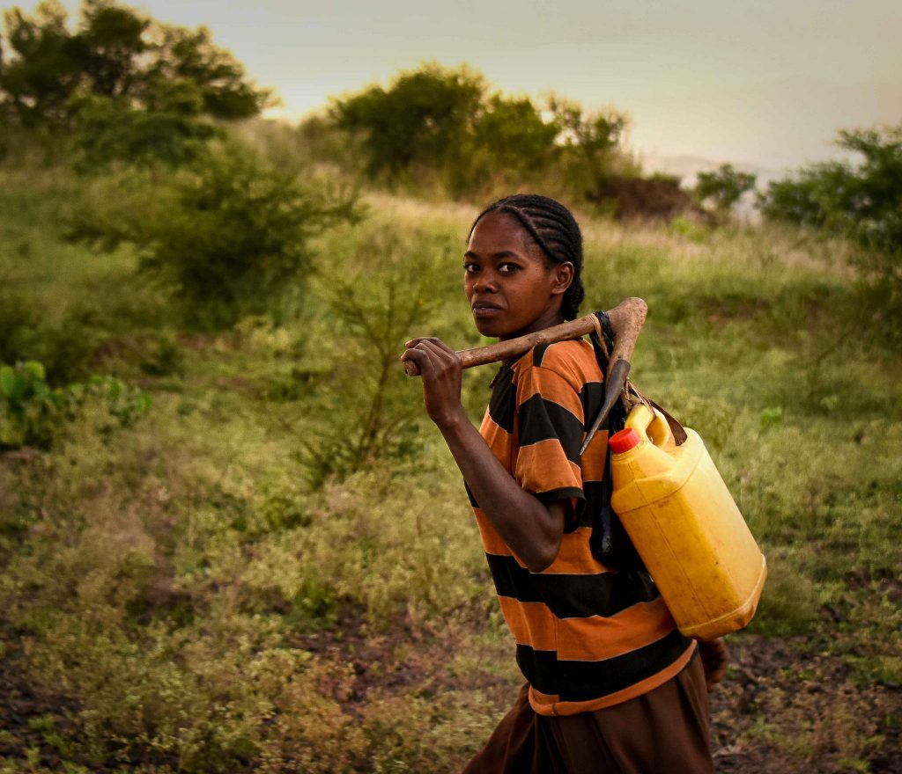
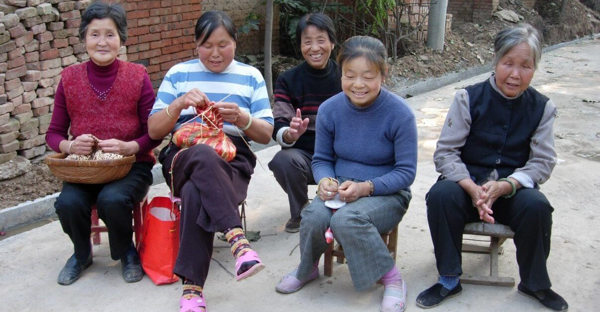
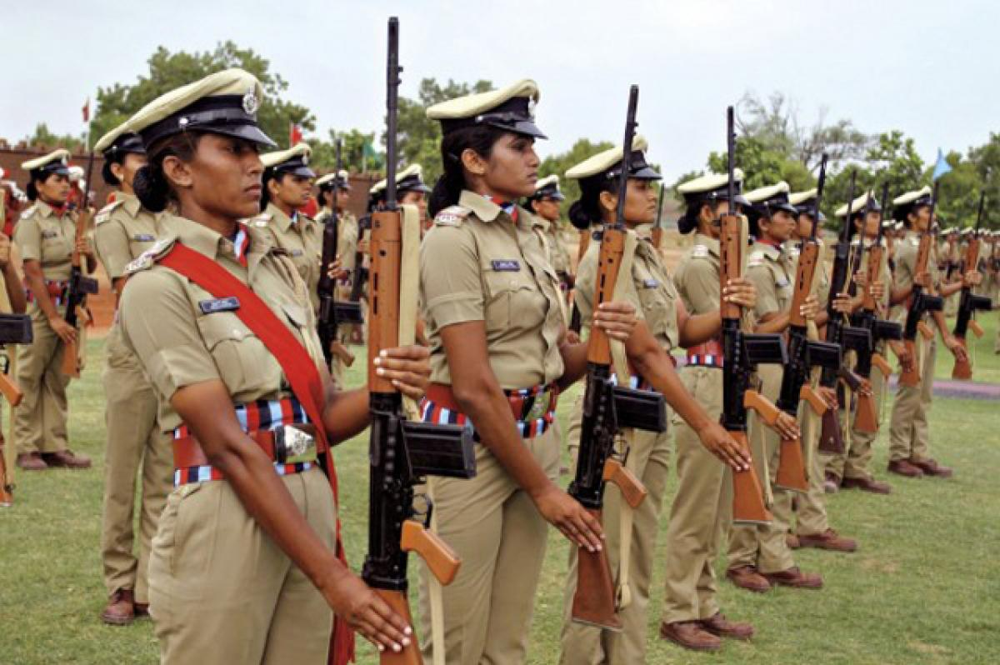
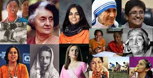
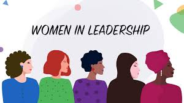

Introduction
Nowadays, the importance of women's education is growing day by day. It is not only important to educate girls and women, but also it is necessary to provide them with basic facilities. In many countries, especially in developing countries, the literacy rate of women is low as compared to men.The main reason behind this illiteracy rate among women is the lack of proper resources. Women's Education In India, the situation of women's education is not very good. According to the 2011 census, the literacy rate of Indian women was 64.6%. This number is quite low as compared to the literacy rate of men, which is 80.9%
Why is it so important?
-
Better Standard of Living
Better standard of living for the family is one of the advantages of women/female education. It doesn’t take a mathematician to conclude that a family relying on double wages is more content and happy than a family which relies on the income of a single parent.An educated mother will earn as good as the father of the family and will look after the financial needs of her family in a much better way. Two incomes under the same roof will improve the quality of living and also ensure better education and facilities to the children, not to mention that a happy family will ultimately lead to a happy society.
-
Improved Health and Hygiene
Women are more concerned about the health of their family than men and have a great sense of hygiene too. Even working women are constantly concerned about their family’s health and don’t compromise with it at any cost.
-
Eliminating Crime against Women
Many of the social evils and crimes against women can be easily eliminated by educating women. Incidents of dowry, flesh trade, female infanticide as well as harmful customary practices can be eradicated by educating women of a society.
An educated woman plays a very important role in a civilized family and influences the thoughts and beliefs of its members.
The Benefits of Women's Education





-
Good for Economic Growth
Perhaps the most obvious of the advantages of female education is the potential for economic growth. According to the World Bank, women see a 25 percent increase in wages later in life with only one year of secondary education. Female education even affects gross domestic product, with a rise of 0.3 percentage points per percentage point increase in female education participation. When women are educated, the entire economy grows and thrives.
Good for Communities
An educated woman with increased earning potential is more likely to give back to the community than her male counterparts.
Decreased Child and Mother Mortality Rates
Educated women are more likely to marry later in life, pushing back the age that they have their first child. When women have children later in life, specifically past age 18, women are more likely to survive the potentially dangerous first birth, as is their child. Furthermore, educated women are often more knowledgeable about children’s nutrition, proper sanitation practices and medical care. The Center for Global Development estimated that 1.8 million children’s lives could have been saved if their mothers had completed secondary school.
Conclusion
Women should be given equivalent chance in education like men and they should not be cut off from any development opportunities. To extend the significance and progress the level of women education all over the country, proper awareness programs are necessary, especially in the rural areas. A knowledgeable female can teach her whole family and also the whole country.